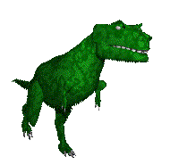
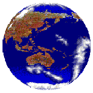
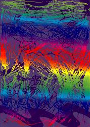
Scratch Art By : Sambit
![[IMAGE]](../../gifs/sam.gif)
I am Sambit Misra. My parents are Debasmita and Nilima Misra. I live in Hancock, Michigan. I was born on September 30, 1990. I go to Hancock Elementary School. My hobbies include singing, watching kids program on tv, swimming, Tae Kwan Do and many things that other kids do. I have two cool and chagali sisters Naina (born on May 18, 1996) and Manisha (born on March 26, 1997).
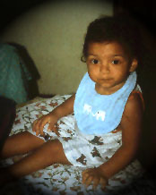
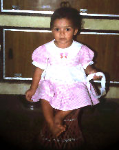
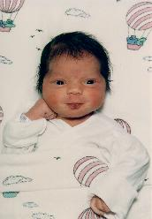
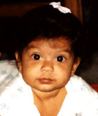
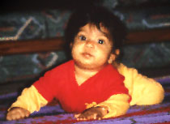
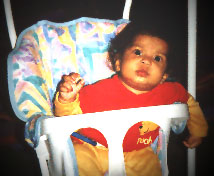
My Voice Gallery
Hello (8K wav)
Aik Dui (41K wav)
Ratani Paata Patani (71K wav)
Baah Baah (79K wav)
My Art Gallery
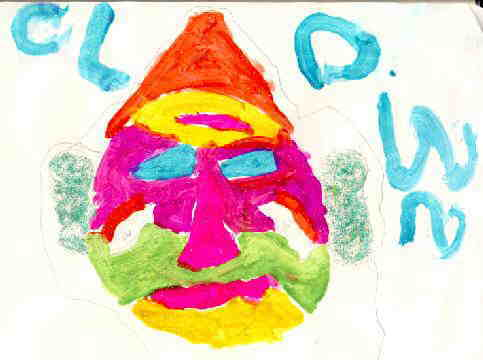
My Swapnakant uncle as I perceive him
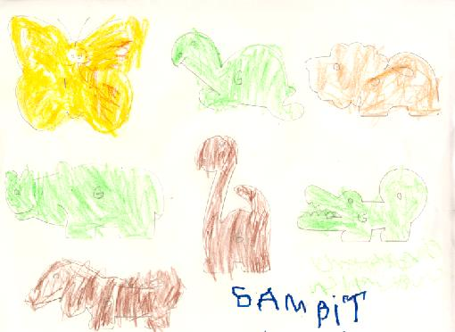
My first shot at images and colors
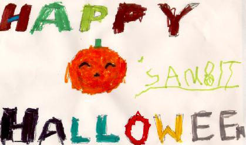
Halloween Art with Papa's Help
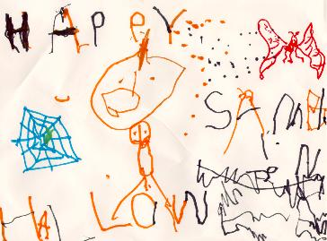
Halloween Art without Papa's Help
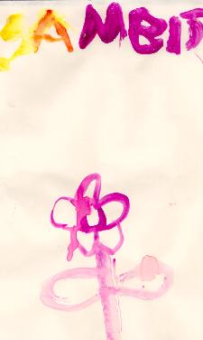
My first painting of a flower
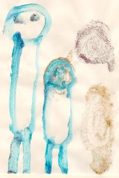
Papa, Mama and Sambit
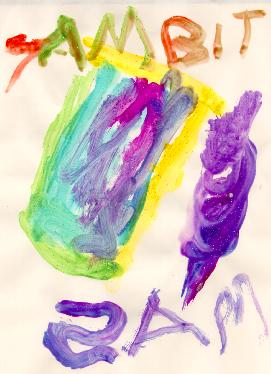
An adventurous painting with my Nihar Kaka

Please Stay Tuned

| This Page Has Been Accessed | Times Since |
|---|
was last updated on :